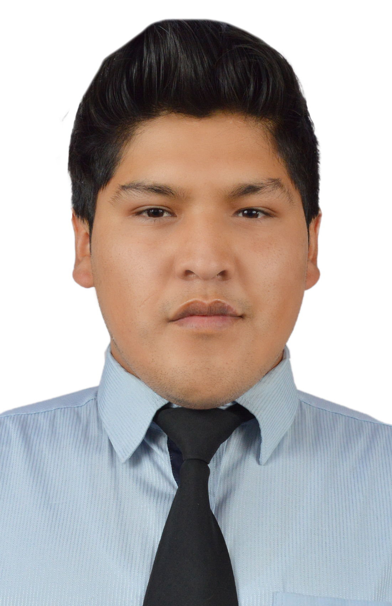

Ricardo Sanjines | WDD 130
¡Hola! Soy Ricardo Sanjines, estudiante de IngenierÃa Electrónica y apasionado por la tecnologÃa, la robótica y el desarrollo de software. Me encanta aprender constantemente y compartir mis conocimientos con otros.